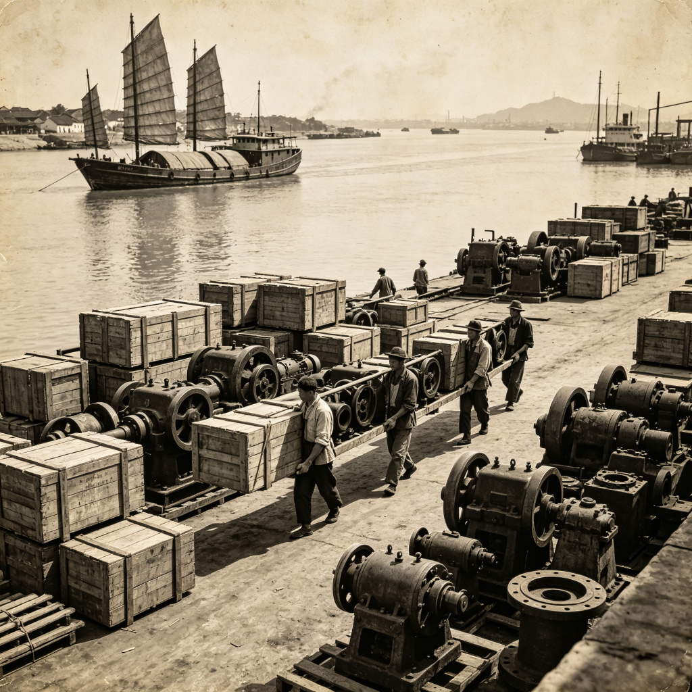

📜 历史现场：工厂内迁
全面抗战爆发后，沿海工业基地沦为战区。国民政府组织大规模工业内迁——
从上海、南京、武汉等地，将工厂设备拆运至重庆、四川等地。
从1938年至1940年，共有600余家民营工厂、
10万余吨物资沿长江迁入四川，其中大部分在重庆落地。
这些工厂成为战时中国的"工业命脉"，生产着武器、药品、布匹和一切战争所需。
而这一切的起点，就是朝天门码头——
江面上船帆如织，岸上人流如潮，一座山城，就这样被硬生生拖进了战争。
📷 历史影像

工厂内迁：码头上工人搬运沉重的机器设备，木箱和机器零件堆放在江边

轰炸过后：残破的建筑残骸，瓦砾遍地，市民在废墟中行走
🚢 码头时间线
1937.11
上海沦陷。南京国民政府开始筹划西迁。第一批文物、档案沿长江西上。
1938.08
武汉危急。大量工厂设备、学校师生、政府机构逆流而上，抵达朝天门。
码头24小时不卸货，搬运工三班倒。
1939.05
重庆遭遇"五三"、"五四"大轰炸。朝天门码头周边沦为火海。
但轰炸过后，码头很快恢复运转——物资不能断。
1941.12
太平洋战争爆发。滇缅公路被切断，重庆成为"孤立之都"。
朝天门码头成为唯一的对外生命线——驼峰航线的终点。
📁 现场拾得
在码头的货堆旁，你发现一张被油浸透的提单，上面写着：
"申新纱厂内迁设备 · 共计327箱 · 途经宜昌转运 · 押运人：林阿妹"
🔓 新地点解锁
你在码头遇到了一个从城里跑出来的妇人，她说昨晚又有空袭—— 较场口那边的防空洞，好像出了大事。你决定去看看。